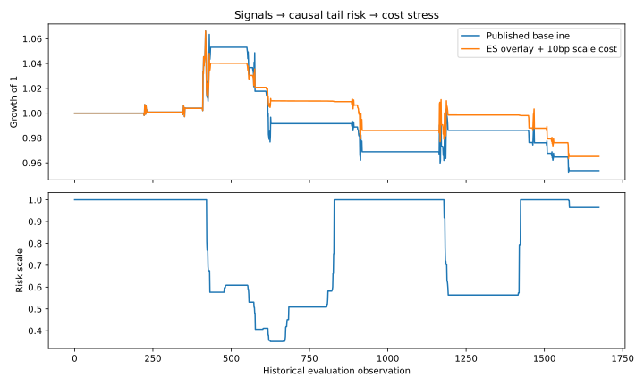
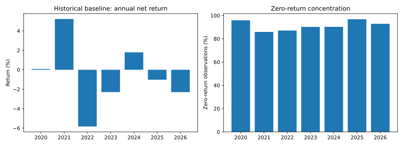

Research dashboard · 24 October 2026 · 59 tests
Real Assets: Fundamentals & Relative Value
Embassy public filings → dated NAV bridge → listed-property signals → tail risk
Decision and evidence
Brings the Embassy REIT/Manyata memo and Excel model into the listed-property research repository. A disclosure-availability gate keeps fundamental analysis separate from historical signals when the information was not yet public.
Finding. Reported values reconcile to INR491.616 NAV per unit. The apparent 10.90% discount uses different dates and is not a tradable signal. The historical relative-value baseline remains negative after costs.
Do public fundamentals and historical relative-value signals support the same investment decision?
- Reconcile the filing. Convert crore to INR and reconcile gross asset value, other assets, liabilities, gross debt and units. NAV per unit is approximately INR491.62 for the dated filing case.
- Respect publication dates. A March valuation and June market price do not form a same-date discount. Required disclosures must be available on the decision date. The apparent 10.90% cross-date discount is context, not an actionable backtest signal.
- Evaluate the signal separately. Compare the costed baseline with the expected-shortfall risk overlay on the same observations. The baseline remains negative; a smaller drawdown does not establish alpha.
- Connect to a decision. Use the memo for fundamental diligence and the ledger for statistical diagnostics. Do not retrospectively join later filings into earlier trades.
Calculation: NAV/unit = (gross asset value + other assets − other liabilities − gross debt) × 10,000,000 / units; information release date ≤ decision date.
Evidence: fundamentals.py · test_fundamentals.py · embassy_case/ · results/integrated_ledger.csv
Research views


Model mechanics
NAV/unit = (GAV + other assets − other liabilities − gross debt) / units, with explicit crore-to-INR conversion. A decision date earlier than any required release date is rejected. Historical signal, expected-shortfall overlay and synthetic execution outputs remain separately identified.
From basic input reconciliation to stress analysis, each step has an auditable calculation trail in the repository.
Boundaries
The dated Embassy case is not a current valuation. It is not joined into old signals with hindsight. Historical short availability and execution remain assumptions; overlay scaling is not a full order-level rerun.
Offline research software, not a production trading or asset-management system.
Data and reproducibility
Embassy FY2026 valuation package: observation 31 March 2026, release 27 April. Q1 FY2027 supplemental databook: observation 30 June, release 30 July. Accessed 22 October 2026; complete URLs and pages in fundamentals.py and the memo.
fundamentals.json — exact results and assumptions
{
"as_of": "2026-10-24",
"march_nav_per_unit": 491.61628446364796,
"june_price": 438.04,
"cross_date_discount": 0.10897988157999994,
"net_debt_rounding_residual_million": -1,
"principal_minus_amortized_debt_million": 548,
"sources": [
{
"name": "Embassy FY2026 earnings/valuation package",
"url": "https://www.embassyofficeparks.com/wp-content/uploads/2026/06/press_release__-_final.pdf",
"observation_date": "2026-03-31",
"release_date": "2026-04-27",
"access_date": "2026-10-22",
"page": 38
},
{
"name": "Embassy Q1 FY2027 supplemental databook",
"url": "https://www.embassyofficeparks.com/wp-content/uploads/2026/09/se_filing_-__press_release_and_earnings_presentation.pdf",
"observation_date": "2026-06-30",
"release_date": "2026-07-30",
"access_date": "2026-10-22",
"pages": [
55,
67,
68
]
}
],
"warning": "March NAV and June price are not contemporaneous. July disclosure cannot be used for a June backtest. This snapshot does not create a tradable convergence signal."
}summary.json — exact results and assumptions
{
"observations": 1675,
"baseline": {
"total_return": -0.0462783412058656,
"max_drawdown": -0.10708501710291518,
"annualized_vol": 0.04528304210989733
},
"risk_overlay_cost_scenarios": {
"0": {
"total_return": -0.03267330131800383,
"max_drawdown": -0.09434074332278919,
"annualized_vol": 0.03818356751918184
},
"5": {
"total_return": -0.03377501556986995,
"max_drawdown": -0.09535620409873613,
"annualized_vol": 0.038185044893653014
},
"10": {
"total_return": -0.03487554164811513,
"max_drawdown": -0.09637058842828694,
"annualized_vol": 0.03818679066914888
},
"25": {
"total_return": -0.038170002968583194,
"max_drawdown": -0.09940729352011113,
"annualized_vol": 0.03819363800544578
}
},
"scaled_days": 748,
"execution_stress_runs": 200,
"sources": [
{
"name": "Published listed-property strategy ledger; Yahoo-based upstream prices",
"link": "https://github.com/Anjaney336/india-realestate-quant-backtest/blob/main/results/historical/ledger.csv",
"access_date": "2026-10-24",
"sha256": "c9791ab4bb2db038f3f7180ac63df58206e7bbb48f0983b251338dc715bff9ba"
},
{
"name": "Synthetic execution snapshots",
"link": "https://github.com/Anjaney336/quant-execution-lab/blob/main/experiments.py",
"access_date": "2026-10-24"
}
],
"assumptions": {
"ES_window": 252,
"tail_fraction": 0.05,
"daily_tail_budget": 0.005,
"warmup_scale": 1.0,
"extra_cost_bps": [
0,
5,
10,
25
]
},
"limitations": "Counterfactual return-scaling overlay, not an order-level rerun. Baseline already includes costs; extra costs apply to scale changes. Execution snapshots are synthetic and not calibrated to Indian property stocks. No claim of profitable alpha."
}SQL, time-series analysis and statistical arbitrage
Data → hypothesis → chronological test → auditable run. SQLite primary keys and price checks feed a parameterised as-of query with a CTE and LAG window function. The SQL-loaded backtest matches the direct-input ledger exactly across 3,024 synthetic price records.
Regression and hypothesis testing
statsmodels OLS with HAC standard errors, ADF level/difference tests, Engle–Granger, Johansen, Ljung–Box and ARCH-LM diagnostics; SciPy correlation and normality tests. Holm correction is applied to candidate pairs in each training window. Diagnostic p-values are not retuned into new trading rules.
Stochastic processes and hedge mathematics
Spread = log(Y) − a − beta log(X). For a stable AR(1) estimate, half-life = −ln(2)/ln(phi); the OU relation is phi = exp(−kappa Δt). The existing Kalman hedge updates intercept and slope causally. These assumptions and their failure cases are documented.
Recorded result: the synthetic fixture’s fitted half-life is 6.63 observations. Raw Engle–Granger p=0.0426 does not settle the question: Johansen does not reject at 5%, and Holm correction is required before pair selection. The 756-observation SQL replay returns +0.698% net cumulatively in constructed synthetic data—not empirical alpha.

Git-integrated research
Push/PR workflow runs six new audit tests and the SQL-fed backtest, then uploads result artifacts. CI records commit/run IDs plus input/code hashes. Local runs leave Git identity null. Existing walk-forward, execution and statistical tests remain in the repository.
Mathematics, diagnostics and Git workflow · Executed SQL · CI runs and artifacts